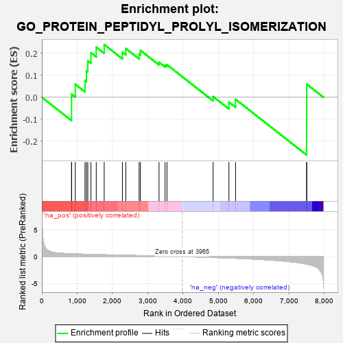
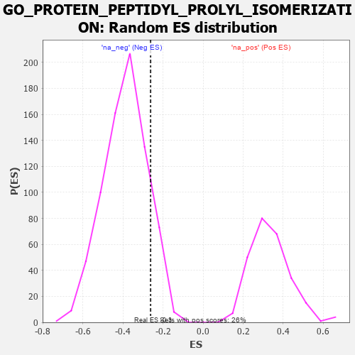

| | | Dataset | 7d |
| Phenotype | NoPhenotypeAvailable |
| Upregulated in class | na_neg |
| GeneSet | GO_PROTEIN_PEPTIDYL_PROLYL_ISOMERIZATION |
| Enrichment Score (ES) | -0.26230878 |
| Normalized Enrichment Score (NES) | -0.67379934 |
| Nominal p-value | 0.877193 |
| FDR q-value | 1.0 |
| FWER p-Value | 1.0 |
Table: GSEA Results Summary

Fig 1: Enrichment plot: GO_PROTEIN_PEPTIDYL_PROLYL_ISOMERIZATION
Profile of the Running ES Score & Positions of GeneSet Members on the Rank Ordered List
| PROBE | GENE SYMBOL | GENE_TITLE | RANK IN GENE LIST | RANK METRIC SCORE | RUNNING ES | CORE ENRICHMENT | | 1 | PPWD1 | | | 841 | 0.521 | -0.0456 | Yes |
| 2 | PPIE | | | 842 | 0.521 | 0.0146 | Yes |
| 3 | PTPA | | | 947 | 0.497 | 0.0588 | Yes |
| 4 | PPIL2 | | | 1222 | 0.443 | 0.0754 | Yes |
| 5 | PPIL1 | | | 1262 | 0.437 | 0.1209 | Yes |
| 6 | FKBP6 | | | 1301 | 0.428 | 0.1655 | Yes |
| 7 | FKBP4 | | | 1390 | 0.412 | 0.2020 | Yes |
| 8 | PIN4 | | | 1540 | 0.385 | 0.2276 | Yes |
| 9 | PPIL4 | | | 1765 | 0.343 | 0.2391 | Yes |
| 10 | AIP | | | 2281 | 0.263 | 0.2046 | No |
| 11 | PPID | | | 2376 | 0.249 | 0.2215 | No |
| 12 | PPIA | | | 2754 | 0.190 | 0.1961 | No |
| 13 | PPIH | | | 2790 | 0.184 | 0.2130 | No |
| 14 | PPIL3 | | | 3317 | 0.103 | 0.1587 | No |
| 15 | FKBP2 | | | 3488 | 0.079 | 0.1464 | No |
| 16 | PIN1 | | | 3543 | 0.069 | 0.1476 | No |
| 17 | CWC27 | | | 4848 | -0.168 | 0.0029 | No |
| 18 | FKBP8 | | | 5296 | -0.270 | -0.0221 | No |
| 19 | PPIG | | | 5484 | -0.314 | -0.0094 | No |
| 20 | PPIL6 | | | 7496 | -1.394 | -0.1015 | No |
| 21 | PPIB | | | 7499 | -1.396 | 0.0594 | No |
Table: GSEA details [plain text format]

Fig 2: GO_PROTEIN_PEPTIDYL_PROLYL_ISOMERIZATION: Random ES distribution
Gene set null distribution of ES for GO_PROTEIN_PEPTIDYL_PROLYL_ISOMERIZATION